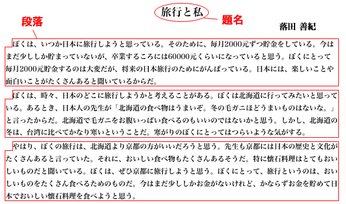

コンピュータで表わされる文章は、テキストtextと呼ばれる。しかし、テキストは単なる文字列である。
わたしたちは、教科書、新聞、雑誌などの《紙の文章》を読むことがある。《紙の文章》では、『どこが《題名》であるか』『どこが《段落》であるか』などの情報が、文字の大きさや文字の並べ方によって示されている。例えば、《題名》は、文章の先頭に大きめの文字で書かれるし、《段落》は、改行して１字分下げられるのがふつうである。

図に示したように、《紙の文章》では、文章の論理構造が視覚的に表示されているのである。
それに対して、コンピュータのテキストでは、文字列の中のどの部分がどのような役割を果たすかを、マークアップmarkupという方法で示す。マークアップとは、テキストにタグtagと呼ばれる特別なマークをつけることをいう。マークアップのやり方には一定のルールがあり、テキストをマークアップするときには、マークアップ言語markup languageと呼ばれるものが使われる。
インターネットinternetのサービスにおいて、最も普及しているマークアップ言語がHTMLである。HTMLはテキストの論理構造を記述するものであり、その目的は複数のコンピュータの間で〈ハイパテクストHyperText〉を共有することである。